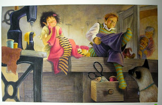

There was once a shoemaker who, through no fault of his own, had become so poor that at last he had only leather enough left for one pair of shoes. At evening he cut out the shoes which he intended to begin upon the next morning, and since he had a good conscience, he lay down quietly, said his prayers, and fell asleep.
In the morning when he had prayed, as usual, and was preparing to sit down to work, he found the pair of shoes standing finished on his table. He was amazed, and could not understand it in the least.
He took the shoes in his hand to examine them more closely. They were so neatly sewn that not a stitch was out of place, and were as good as the work of a master-hand.
Soon after a purchaser came in, and as he was much pleased with the shoes, he paid more than the ordinary price for them, so that the shoemaker was able to buy leather for two pairs with the money.
He cut them out in the evening, and next day, with fresh courage was about to go to work; but he had no need to, for when he got up, the shoes were finished, and buyers were not lacking. These gave him so much money that he was able to buy leather for four pairs of shoes.
Early next morning he found the four pairs finished, and so it went on; what he cut out at evening was finished in the morning, so that he was soon again in comfortable circumstances, and became a well-to-do man.
Now it happened one evening, not long before Christmas, when he had cut out shoes as usual, that he said to his wife: “How would it be if we were to sit up to-night to see who it is that lends us such a helping hand?”
The wife agreed, lighted a candle, and they hid themselves in the corner of the room behind the clothes which were hanging there.
At midnight came two little naked men, who sat down at the shoemaker’s table, took up the cut-out work, and began with their tiny fingers to stitch, sew, and hammer so neatly and quickly, that the shoemaker could not believe his eyes. They did not stop till everything was quite finished, and stood complete on the table; then they ran swiftly away.
The next day the wife said: “The little men have made us rich, and we ought to show our gratitude. They run about with nothing on, and must freeze with cold. Now I will make them little shirts, coats, waistcoats, and hose, and will even knit them stout stockings, and you shall make them each a pair of shoes.”
The husband agreed, and at evening, when they had everything ready, they laid out the presents on the table, and hid themselves to see how the little men would behave.
At midnight they came skipping in, and were about to set to work; but, instead of the leather ready cut out, they found the charming little clothes.
At first they were surprised, then excessively delighted. With the greatest speed they put on and smoothed down the pretty clothes, singing:

"Now we’re dressed so fine and neat, Why cobble more for others’ feet?”
Then they hopped and danced about, and leaped over chairs and tables and out at the door. Henceforward, they came back no more, but the shoemaker fared well as long as he lived, and had good luck in all his undertakings.